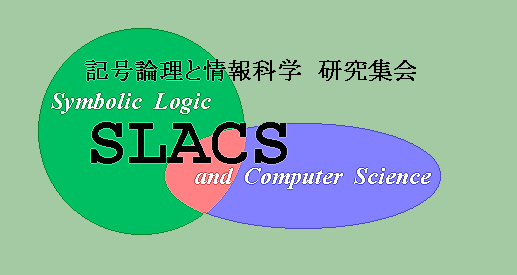

第19回 「記号論理学と情報科学」(SLACS 2002)
2002年9月18日(水)午後 〜 9月20日(金)
千葉大学 理学部 (西千葉キャンパス 理学部1号館 2階 121講義室)
(地図)
今年度の SLACS は終了しました。
ご講演・参加をして下さった皆様に感謝致します。
次年度は、東京大学の佐藤周行さんにより開催される予定です。
集会の目的と対象分野
SLACS は、記号論理学と計算機科学の研究者の相互交流を目的として開かれている研究集会で、今年で19回目になります。
対象は、記号論理学や計算機科学、あるいはその両方に関わる話題全般で、プログラミング言語の基礎理論、形式的論理、アルゴリズムの理論などが主たるトピックですが、これに留まらず広い範囲の発表を歓迎します。
形式張らない研究集会を目指していますので、完成した話はもちろん、発展途上の話題など積極的な参加をお待ちしております。
なお、当研究集会の参加は無料で、申し込みの必要はございません。
どなたでもご自由に参加できますので、皆様のお越しを心よりお待ち申し上げております。
懇親会:
19日(木)の18時から
大学の近くの志摩屋という飲み屋で開きます。
お問い合わせ
SLACS 2002 幹事
桜井 貴文
千葉大学 理学部 数学・情報数理学科
tel: 043-290-2713
fax: 043-290-2733
email: sakurai@math.s.chiba-u.ac.jp
までお願い致します。
SLACS Homeへ戻る